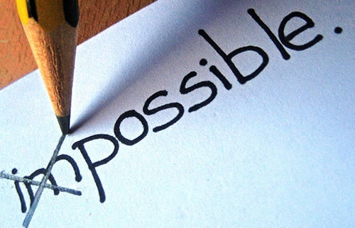

Jeffrey's Strengths
| Home | Ap-Create | AP-Explore | Strengths | Strengths |
| Home | Ap-Create | AP-Explore | Strengths | Strengths |
You like to start friendships and keep them for a long time ²maybe even your whole life. You widen the circle of friends for yourself and others.There are many ways to be good at relating. You might easily meet new people, learn their names, and make friends very quickly wherever you go. You might take time to make friends, but be good at building long-lasting friendships. You might do both. If you make friends quickly, people probably view you as happy, outgoing, and instantly likeable. If you would rather spend time with a small group of friends talking, laughing, or just being together, these friends might see you as a best friend they can trust and talk to. You might be best at relating with teachers, parents, and other adults, and they can help you learn and feel good about yourself. Whatever your style of relating, people like you and relationships are important to you.

You see many things in life as a game, and you feel great joy when you win. You truly hate to lose because you are always striving for first place.Every day you compete. Winning first place is your goal in any contest that you feel is worth your time. If there is no one to compete against, you compete against yourself to do more or accomplish a goal faster or better. You can be competing against someone else even when that person doesn¶t know it. Because you hate to lose, you might get angry, upset, or even cry. It does not matter if others think the contest is important. If you are doing it, you want to be number one. Others look to you for the motivation to win.

You have more energy and more goals than other people. You love a sense of accomplishment.You are in a hurry to get started and make things happen because you almost always have a list in your mind of the things you want to get done. It is fun to achieve small goals and even more exciting to achieve big goals that challenge you. The more you get done, the more you feel like a successful person. And the more successes you have, the more you want to have. Finishing a project feels good to you because you love a sense of accomplishment. An award, a good grade, or praise can mean a lot to you because it feels good when your effort and ability are noticed. Because you are a hard worker, you always feel that you could and should be doing more.
